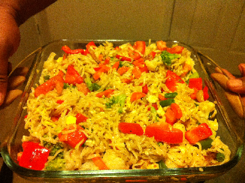

Pasta

Description
This is a healthier and easy vegan pasta dish with olives, dill pickles, broccoli, tomatoes, and dill - perfect for parties!
The dish is easy to make and very popular one.
Ingredients
- 1 (16 ounce) package rotini pasta
- 1 cup chopped broccoli
- ½ cup vegan mayonnaise
- 1 (6 ounce) can sliced olives, drained
- 3 large dill pickles, diced
- 3 large tomatoes, diced
- ¼ cup dill pickle juice
- boiled veg
- 3 tablespoons minced fresh dill
- ½ tablespoon dried dill
- 1 teaspoon ground mustard
Steps
- Bring a large pot of lightly salted water to a boil; cook the pasta at a boil until tender yet firm to the bite, about 10 minutes; drain. Transfer to a large bowl.
- Add broccoli, mayonnaise, olives, pickles, tomatoes, pickle juice, fresh dill, dried dill,vegetables and mustard to the bowl with the pasta and mix to combine. Chill at least 3 hours and stir before serving.
Recipe: www.allrecipes.com, Cover Picture: Shima Apu